Projects
Mineral UI
https://mineral-ui.com/
- 3-4 Member Dev Team
- Consumers can utilize encapsulated, performant, flexible, accessible, internationalized, responsive components for the building blocks of their products
- Responsibile for research (regarding design systems, user interaction (UI), and accessibility), planning, UI and design implementation, and testing (snapshots, visual diffs, and cross-browser compatability)
- React, Theo tokens, Enzyme/Jest, Travis CI, Happo visual diff testing
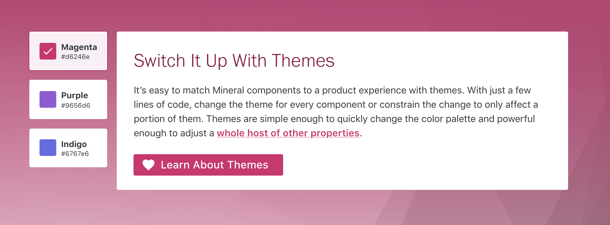
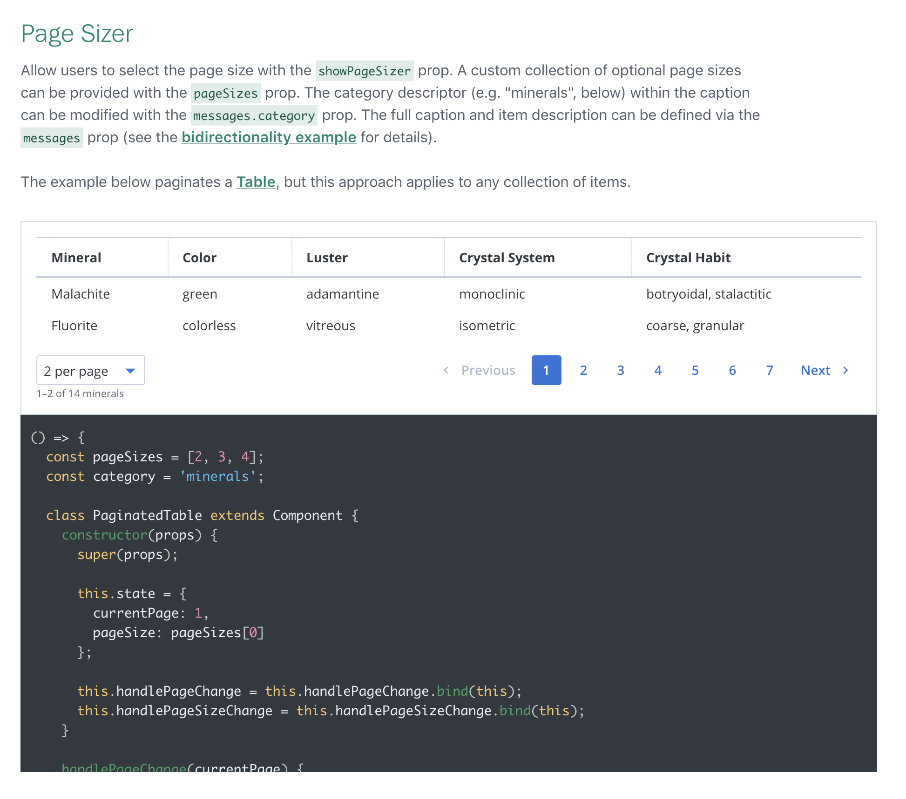
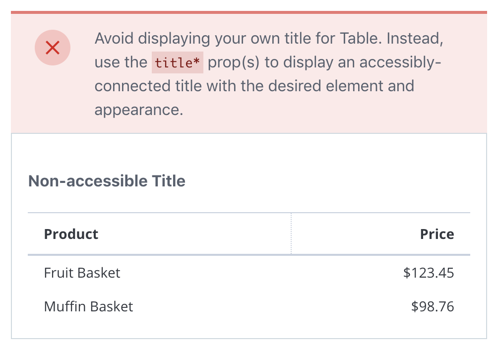
Mineral UI prioritizes accessibility at every level and incorporates thorough documentation where applicable
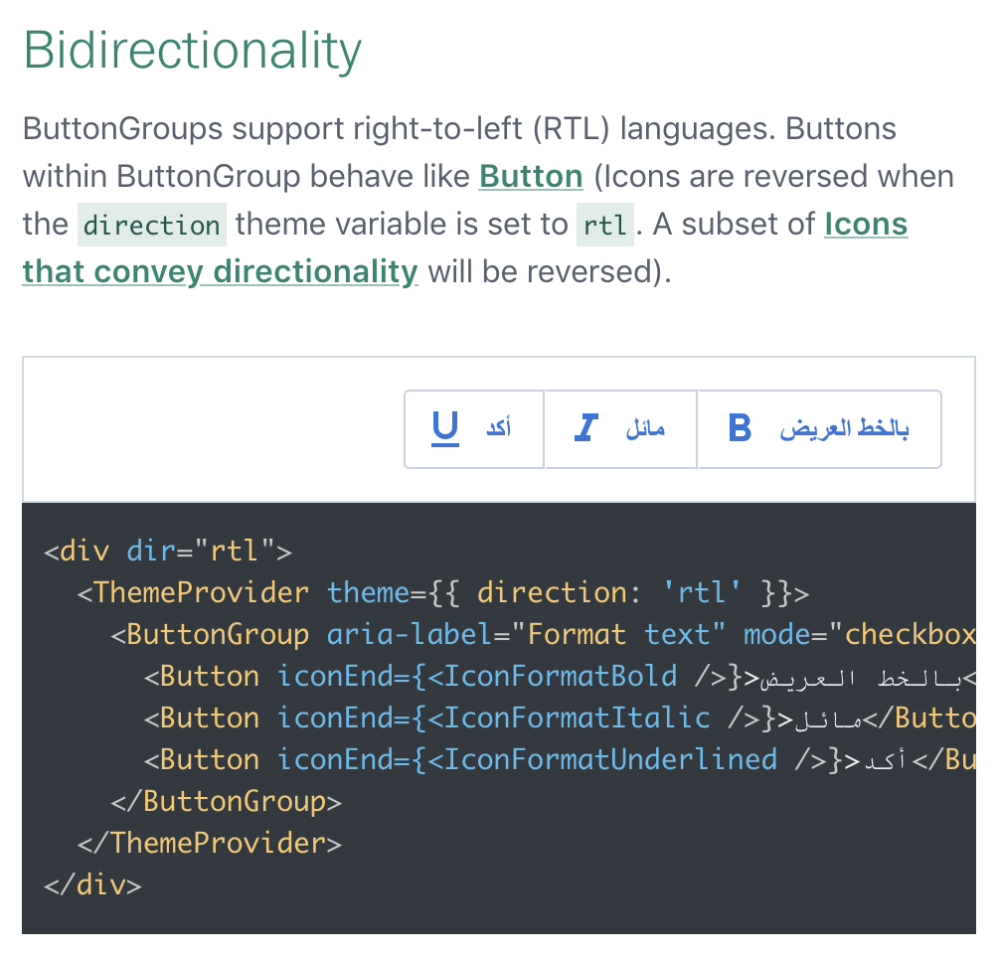
Mineral UI also considers internationalization vital to its core so that it is accessible in any language
Xenia Specialty Pharmacy
http://www.xeniaspecialtypharmacy.com/
- Contracted Solo Project
- Users can gain insight into compounding pharmaceuticals and contact the pharmacy
- Responsible for full-stack development, deployment, and product management
- Rails, Bootstrap, Responsive Design
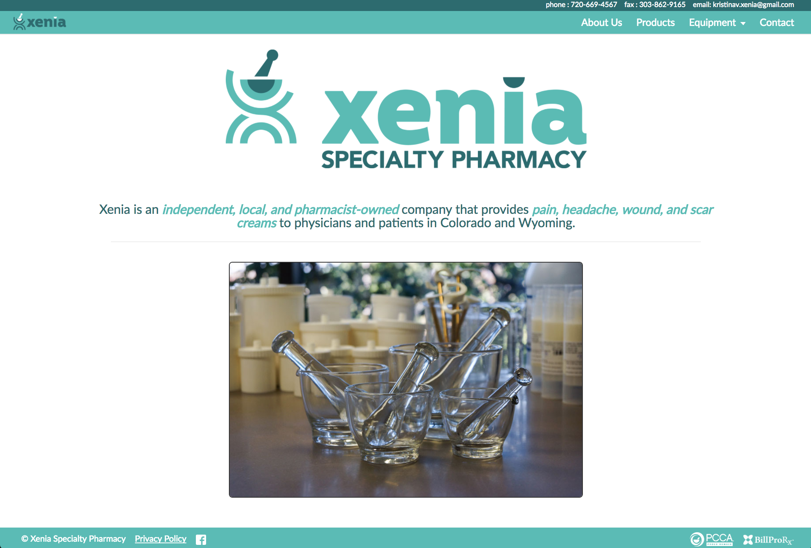 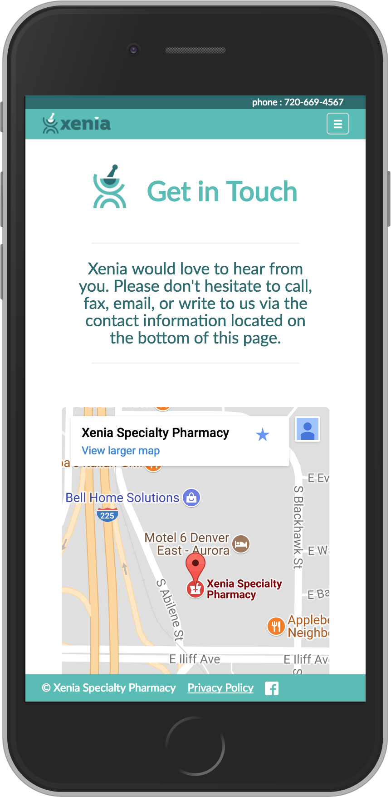
Full Circle
https://full-circle.turing.io/
GitHub Repo- Mainly solo brownfield project, based on a former students' capstone project
- Prospective students who qualify for the Turing Diversity Scholarship save and submit essays, which admin then assign reviewers to score based on passion, determination & financial need.
- Responsible for launching application to production by improving content and UX/UI for the prospective-student page (default), and creating React components to implement the reviewer & admin pages.
- Tech Stack: React, Ruby on Rails, PostgreSQL, SCSS, TravisCI, Heroku Pipeline, Hakiri Security Monitoring
Cloney Island (CI)
Multi-tenancy applications that emulate the style and functionality of a large-scale website.
CI Sprint 2: Grab Bag
https://grabbag.herokuapp.com
username: Admin, password: banana
GitHub Repo- 5-person team
- Dropbox clone, Cloney Island 2nd sprint (brownfield project)
- Calculated analytics through SQL, produced the results via Redis caching & internal API endpoints, and consumed the endpoints to produce graphical data
- Responsible for improving UI/UX and providing and consuming data to display with Dimple.js (a charting API for D3)
- Tech Stack: Ruby on Rails, PostgreSQL, Bootstrap, JBuilder, Javascript (AJAX, jQuery, Dimple.js)
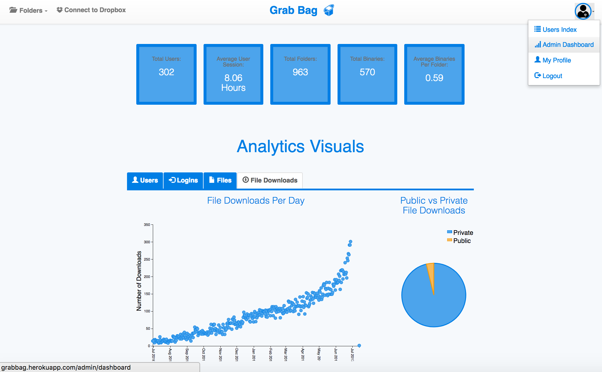
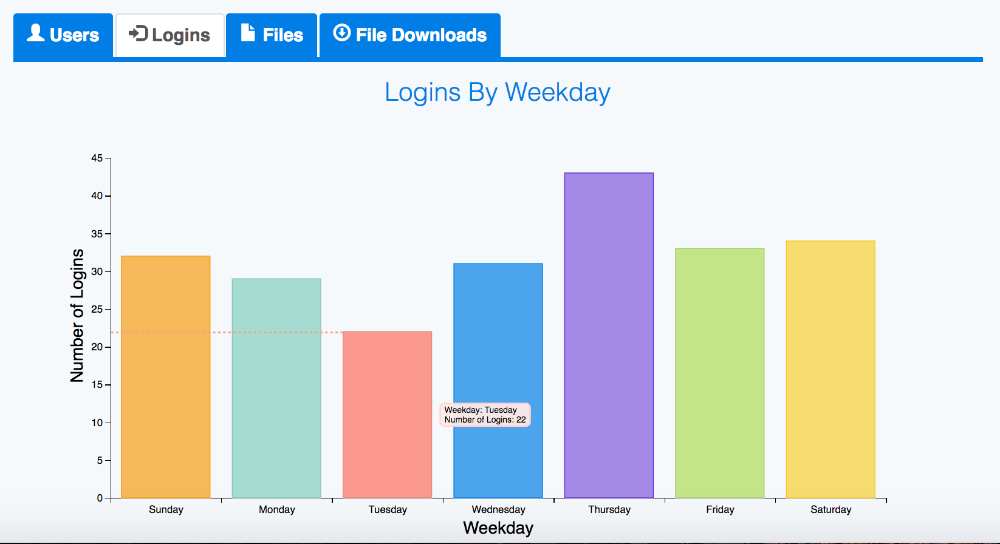
CI Sprint 1: Fairbnb
https://fair-bnb.herokuapp.com
GitHub Repo- 6-person team
- Airbnb clone, Cloney Island 1st sprint (greenfield project)
- Implements multiple OAuth protocols, Devise authentication, internal API endpoints & Action Cable to imlement live messaging through web sockets.
- Responsible for project management, Rails framework, date-range search function, and executing the live-messaging system (not in production due to potential costs of using Heroku's Redis add-on).
- Tech Stack: Ruby on Rails (Action Cable), PostgreSQL, Bootstrap
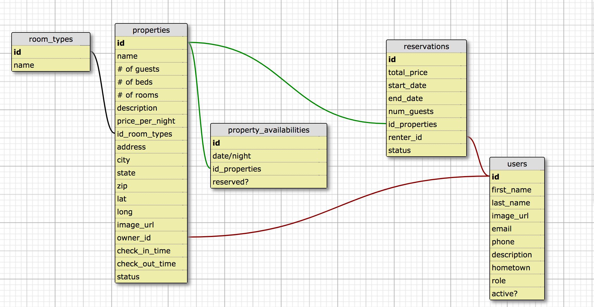
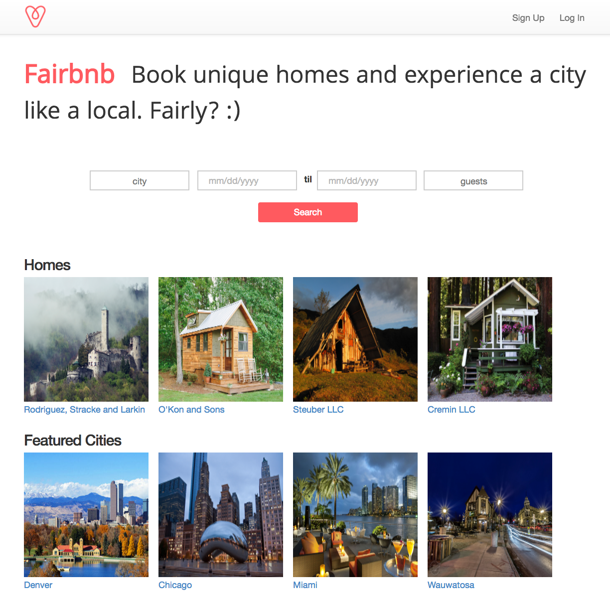
Quantified Self
http://victoriavasys.com/QS-Frontend/
Front-end GitHub Repohttps://ms-vv-quantified-self.herokuapp.com/
Back-end GitHub Repo- Pair project
- Choose & manage foods to keep a diary of what you eat! This app allows you to add, edit, delete & filter foods & add foods to and delete foods from meals, while updating calorie totals, all in realtime.
- FE makes requests to BE API endpoints via AJAX & manipulates the DOM without refreshing
- Responsible for adding, editing, deleting, & filtering foods (both front- & back-end facets)
- Tech Stack: Backend in Node.js & Express.js, Frontend in Node.js & jQuery
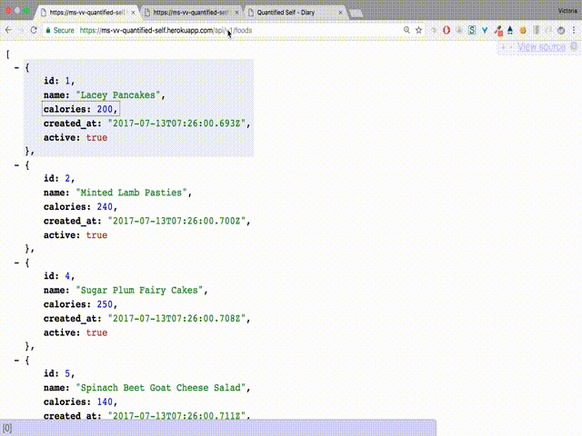
Rales Engine
GitHub Repo- Pair project
- eCommerce business intelligence API to produce data about merchants, customers, and purchases
- ActiveRecord and SQL to optimize query times
- Standardized JSON responses via ActiveModel Serializers
- Tech Stack: Ruby on Rails, PostgreSQL (ActiveRecord, RSpec)
Superpower Shop
https://superpower-shop.herokuapp.com
Email: admin.of.powers@gmail.com, Secret Password???: 123
GitHub Repo- 3-person team
- A creative spin on traditional online ordering platforms. Users can add super powers from various categories to their cart; admin can access orders metrics and manipulate users & orders.
- RESTful implementation and conventional MVC modeling
- Responsible for cart & orders functionality, refactoring & custom Sass
- Tech Stack: Ruby on Rails, PostgreSQL, Bootstrap

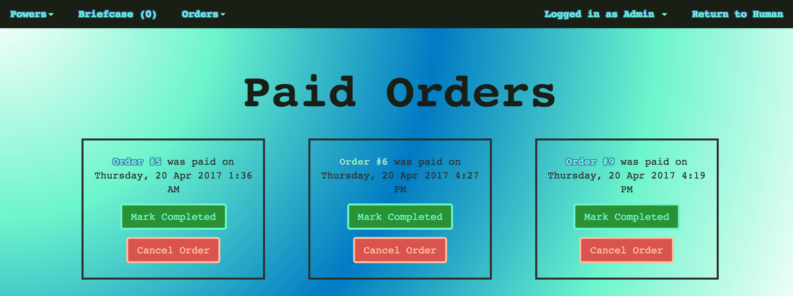